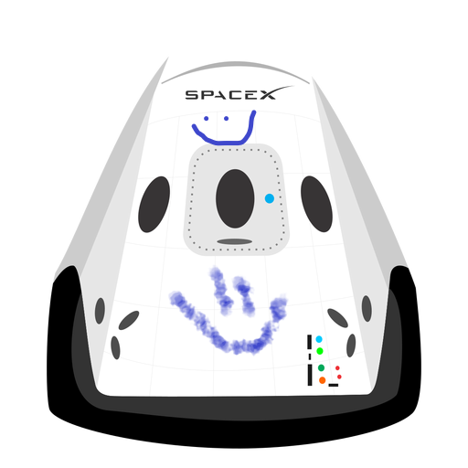

HyperBlog
Tu blog de confianza
Este es el titulo atractivo e interesante post
Y este es el párrafo de inicio dondé vamos a explicar las cosas increíbles que se pueden hacer con ramas

Los blogs son la mejor forma de comprtir informacion y tus ideas. Mucho mas que ir a conferencias o salir en youtube. Excepto si eres un rockstar. Pero estadisticamente no lo eres... por ahora.
Suscibete y dale like